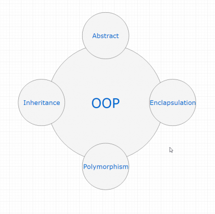
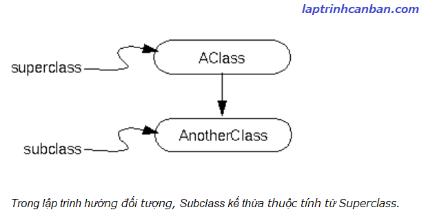

Cùng tìm hiểu về OOP - Lập trình hướng đối tượng trong C++. Bạn sẽ biết khái niệm OOP- lập trình hướng đối tượng trong C++ là gì, các đặc tính của OOP cũng như lợi ích của việc lập trình hướng đối tượng trong C++ sau bài học này.
C++ là ngôn ngữ lập trình hướng đối tượng
C++ là một trong các ngôn ngữ lập trình hướng đối tượng phổ biến nhất hiện này.
Trong bài Ngôn ngữ lập trình C++ là gì chúng ta đã biết, C++ chính là phiên bản của ngôn ngữ C được thêm vào lập trình hướng đối tượng. Nói một cách khác thì điểm đặc biệt nhất của C++ so với C chính là đặc sản OOP- lập trình hướng đối tượng, và nếu học C++ mà không biết đến lập trình hướng đối tượng, thì có nghĩa là bạn chưa thực sự với tới ngôn ngữ này.
Nhờ có lập trình hướng đối tượng mà chúng ta có thể sử dụng tới class trong C++, qua đó có thể mở toan cánh cửa dẫn đến con đường trở thành một chuyên gia trong lĩnh vực lập trình, với những tư duy và cách lập trình hoàn toàn mới.
Trước khi mở cánh cửa này, chúng ta hãy cùng xem lại cách cổ điển mà chúng ta đã luôn dùng để lập trình trước đây, đó chính là POP- lập trình thủ tục.
POP- lập trình thủ tục trong C++
Lập trình thủ tục (Procedure Oriented Programming - POP) là một kỹ thuật lập trình truyền thống, nói một cách đơn giản thì giống như một bản viết trực tiếp các mệnh lệnh cần thiết để xử lý các thủ tục trong chương trình. Các thủ tục ở đây có thể là một chương trình con, hoặc một hàm nào đó trong chương trình, và chúng ta cần phải viết trực tiếp ra tất cả các đoạn mã cần thiết để xử lý chúng.
Các ngôn ngữ như FORTRAN , COBOL , ALGOL, ngôn ngữ BASIC, Pascal, C, Visual Basic hay Go đều là các ngôn ngữ lập trình thủ tục. Ngôn ngữ C++ tuy là ngôn ngữ lập trình hướng đối tượng, nhưng chúng ta cũng có thể dùng cách lập trình thủ tục để lập trình C++.
Ví dụ dơn giản, giả sử chúng ta có chương trình in ra 5 số ngẫu nhiên. Với phương pháp lập trình thủ tục, chúng ta sẽ cần viết trực tiếp tất cả các mã lệnh trong chương trình ra như sau:
|
Kết quả:
41 |
Trong chương trình trên, một biến newNum được tạo ra để lưu giữ số ngẫu nhiên được tạo ra. Với mỗi số ngẫu nhiên được tạo mới thì giá trị của nó sẽ được gán vào newNum, rồi sau đó sẽ được xuất ra màn hình. Mà một vòng lặp sẽ được thực hiện 5 lần để in ra 5 số ngẫu nhiên khác nhau.
Giống như thế, để đạt được mục đích in ra 5 lần 5 số ngẫu nhiên khác nhau, chúng ta cần viết trực tiếp ra toàn bộ các mã lệnh ra và thực thi chúng. Và phương pháp viết chương trình như vậy thì được gọi là lập trình thủ tục.
Trong lập trình thủ tục, để thu được kết quả mong muốn chúng ta chỉ cần viết các mã lệnh theo đúng thứ tự và thực thi chúng là xong. Không chỉ giới hạn trong chương trình đơn giản trên, trong các chương trình phức tạp với nhiều chương trình con hay hàm trong đó cũng vậy, chúng ta chỉ cần viết mã lệnh đúng thứ tự và thực thi chúng, thì sẽ ra được kết quả cuối cùng.
Lập trình thủ tục không phải là xấu. Thực tế thì chúng ta vẫn dùng nó hàng ngày, khi cần xử lý các bài tập lập trình, các chương trình nhỏ, bởi vì nó đơn giản, chỉ cần viết đúng và đủ xử lý thì sẽ cho ra kết quả cuối cùng.
Nhưng nó là chưa đủ. Hãy tưởng tượng với một chương trình lớn hơn, mà với bất kỳ thủ tục nào trong đó bạn cũng phải viết toàn bộ mã lệnh xử lý, thì tiến trình hoàn thành chương trình của bạn sẽ có tốc độ tồi tệ đến thế nào. Thay vì đó, hãy học cách tư duy và cách lập trình mới, để làm sao có thể viết ít dùng nhiều. Và do đó, chúng ta mới cần phải học và nắm vững về OOP - Lập trình hướng đối tượng trong C++.
OOP - Lập trình hướng đối tượng trong C++
Lập trình hướng đối tượng trong C++ là gì
Lập trình hướng đối tượng có tên tiếng anh là OOP (Object-Oriented Programming), là một phương pháp lập trình bằng cách đóng gói dữ liệu vào trong đối tượng và dùng chính đối tượng đó để thao tác dữ liệu.
Nói một cách đơn giản thì dữ liệu trong chương trình không đơn giản chỉ được coi là dữ liệu, mà chúng sẽ được mô hình hóa thành các đối tượng, có những thuộc tính riêng biệt, cũng như là các phương thức riêng để xử lý chúng.
Đối tượng trong c++ là gì
Đối tượng trong c++ hay còn gọi là object trong C++, là các thực thể trừu tượng được tạo ra trong chương trình có tác dụng đóng gói và thao tác dữ liệu.
Một đối tượng sẽ gồm 2 thông tin là thuộc tính của nó và phương thức để xử lý nó.
Để dễ hiểu thì chúng ta hãy liên tưởng tới một đối tượng thực trong cuộc sống, đó chính là cái xe của bạn.
Trong đời thực thì một cái xe có thể có màu sắc, kích cỡ khác nhau, và một cái xe cũng có thể thực thi các hành động đi, lùi hay là tăng tốc v.v.. Những tính chất như màu sắc, kích cỡ ở đây được gọi là thuộc tính của chiếc xe, còn những xử lý như hành động đi, lùi được gọi là phương thức xử lý của chiếc xe đó.
Giống như vậy thì trong lập trình, một đối tượng là một thứ gì đó cũng giống chiếc xe, mặc dù nó không thực sự tồn tại như một vật thể để chúng ta có thể sờ mó, nhưng nó được tồn tại như một thực thể trừu tượng, có tác dụng đóng gói các dữ liệu bên trong nó, rồi cung cấp cho chúng ta các thuộc tính cũng như các phương thức sẵn có để có thể xử lý dữ liệu đó.
Ví dụ khi dữ liệu là một dòng chữ, để xử lý dòng chữ này chúng ta có thể đơn giản in nó ra màn hình. Nhưng khi nó đã được gói vào trong một đối tượng được quản lý bởi class String, nó sẽ được thêm các thuộc tính như kiểu String hoặc độ dài chẳng hạn, và được thêm vô vàn các phương thức đã được chuẩn bị sẵn để xử lý nó, ví dụ như là push_back() để thêm ký tự, hay là erase() và pop_back() để xóa ký tự từ nó chẳng hạn.
Và điểm đặc biệt là không chỉ có dòng chữ đó mà tất cả các dòng chữ khác nó đều có thể được đóng gói vào trong đối tượng, và đều có thể được cung cấp các thuộc tính và phương thức giống nhau để xử lý.
Điều đó có nghĩa, chỉ cần chuẩn bị sẵn một lần các đối tượng tương ứng với các kiểu dữ liệu khác nhau, thì chúng ta có thể dùng đối tượng đó nhiều lần để xử lý bất kỳ dữ liệu nào thuộc kiểu dữ liệu đó.
Điều đó có nghĩa, thay vì cách viết lập trình thủ tục chúng ta cần phải tập trung vào mã lệnh xử lý riêng rẽ từng dữ liệu, thì trong OPP- lập trình hướng đối tượng, chúng ta sẽ tập trung vào chính dữ liệu đó để thiết kế ra các đối tượng phù hợp để có thể đóng gói và xử lý nó, qua đó thay đổi tư duy và nâng cao hiệu suất lập trình.
Class trong c++ là gì
Giống như trên thì để thiết kế ra các đối tượng dùng để xử lý dữ liệu, chúng ta sẽ cần các bản thiết kế chi tiết.
Và class trong C++ hay còn gọi là lớp trong C++ chính là các bản thiết kế ra đối tượng dùng để đóng gói và xử lý dữ liệu.
Trong class sẽ chứa các mã lệnh để thiết kế ra các thuộc tính, cũng như là các phương thức xử lý của dữ liệu. Ngoài ra, nó cũng chứa những thành phần phần cũng như đặc tính cố hữu trong nó, ví dụ như là các hàm tạo (constructor), các định số (static const), hay là hàm hủy (Destructor) chẳng hạn.
Chúng ta sẽ cùng học chi tiết về class trong bài tiếp theo nhé.
Đặc tính của lập trình hướng đối tượng
Có 4 đặc tính quan trọng của lập trình hướng đối tượng trong C++ mà chúng ta cần nắm vững sau đây.

Inheritance (Tính kế thừa)
Inheritance (Tính kế thừa ) trong lập trình hướng đối tượng có ý nghĩa, một class có thể kế thừa các thuộc tính của một class khác đã tồn tại trước đó.
Khi một class con được tạo ra bởi việc kế thừa thuộc tính của class cha thì chúng ta sẽ gọi class con đó là subclass trong C++, và class cha chính là superclass trong C++.

Abstraction (Tính trừu tượng)
Abstraction (Tính trừu tượng) trong lập trình hướng đối tượng là một khả năng mà chương trình có thể bỏ qua sự phức tạp bằng cách tập trung vào cốt lõi của thông tin cần xử lý.
Điều đó có nghĩa, bạn có thể xử lý một đối tượng bằng cách gọi tên một phương thức và thu về kết quả xử lý, mà không cần biết làm cách nào đối tượng đó được các thao tác trong class.
Ví dụ đơn giản, bạn có thể nấu cơm bằng nồi cơm điện bằng cách rất đơn giản là ấn công tắc nấu, mà không cần biết là bên trong cái nồi cơm điện đó đã làm thế nào mà gạo có thể nấu thành cơm.
Polymorphism (Tính đa hình)
Polymorphism (Tính đa hình) trong lập trình hướng đối tượng là một khả năng mà một phương thức trong class có thể đưa ra các kết quả hoàn toàn khác nhau, tùy thuộc vào dữ liệu được xử lý.
Ví dụ đơn giản, cùng là một class quản lý dữ liệu là các con vật, thì hành động sủa hay kêu của chúng được định nghĩa trong class sẽ cho ra kết quả khác nhau, ví dụ nếu là con mèo thì kêu meo meo, còn con chó thì sủa gâu gâu chẳng hạn.
Encapsulation (Tính đóng gói) và information hiding (che giấu thông tin )
Encapsulation (Tính đóng gói) trong lập trình hướng đối tượng có ý nghĩa không cho phép người sử dụng các đối tượng thay đổi trạng thái nội tại của một đối tượng, mà chỉ có phương thức nội tại của đối tượng có thể thay đổi chính nó.
Điều đó có nghĩa, dữ liệu và thông tin sẽ được đóng gói lại, giúp các tác động bên ngoài một đối tượng không thể làm thay đổi đối tượng đó, nên sẽ đảm bảo tính toàn vẹn của đối tượng, cũng như giúp dấu đi các dữ liệu thông tin cần được che giấu.
Ví dụ đơn giản, khi bạn dùng một cái iphone, bạn không thể thay đổi các cấu trúc bên trong của hệ điều hành iOS, mà chỉ có Apple mới có thể làm được điều này thôi.
Lợi ích của lập trình hướng đối tượng
Không chỉ giới hạn trong ngôn ngữ C++, việc sử dụng lập trình hướng đối tượng sẽ đem lại rất nhiều lợi thế như sau:
Khả năng bao quát về lập trình
Hãy lấy ví dụ khi chúng ta tạo ra một thành phố.
Khi đó, việc lập trình thủ tục giống như chúng ta đi vào chế tạo từng con đường, từng cái cây, từng chi tiết nhỏ của thành phố.
Trong khi với lập trình hướng đối tượng lại hướng chúng ta tới việc thiết kế ra các đối tượng trước trong tổng thể của một chương trình, rồi sau đó mới tiến hành chế tạo chúng..
Với lập trình hướng đối tượng, bạn có thể tiến hành dự án trước tiên bằng cách xây dựng hình ảnh tổng thể và sau đó xây dựng chi tiết các phần trong nó.
Nói một cách khác, bằng việc hình dung ra hình ảnh cụ thể của các đối tượng trong chương trình mà chúng ta có thể bao quát được rõ ràng hơn về chương trình mà mình đang viết.
Dễ dàng hợp tác và phân công công việc nhóm
Giống như khi xây dựng một thành phố, việc lập trình thủ tục giống như chúng ta liên tục tuần tự chế tạo ra các thành phần trong nó.
Còn với lập trình hướng đối tượng, việc có được cái nhìn tổng quát về chương trình cũng như hình ảnh cụ thể của từng thành phần trong đó, sẽ giúp chúng ta có thể phân công công việc trong nhóm. Ví dụ anh A có thể làm class để tạo ra các cái cây, còn chị B thì phụ trách class để tạo ra các loại xe chẳng hạn.
Và chính vì lẽ đó, lập trình hướng đối tượng sẽ phù hợp hơn để thiết kết các hệ thống khổng lồ, với hàng trăm lập trình viên cùng tham gia vào phát triển.
Dễ dàng cải thiện và sửa đổi
Trong phát triển dự án, thì hầu như là không có dự án nào có thể đi theo đường thẳng từ bắt đầu đến khi kết thúc, mà sẽ luôn có những đoạn chúng ta cần phải quay lại để sửa lại một số chi tiết nào đó.
Ví dụ như khí thiết kế tòa nhà trong thành phố, mà bạn bỗng nhiên muốn lắp thêm ăng ten lên các tòa nhà chẳng hạn.
Nếu bạn dùng lập trình thủ tục để tạo ra các tòa nhà, thì từng tòa nhà tồn tại riêng rẽ độc lập với nhau, nên bạn sẽ phải lắp thêm từng cái ăng ten vào toàn bộ các tòa nhà trong thành phố.
Nhưng nếu bạn dùng lập trình hướng đối tượng, do tất cả các tòa nhà đều do một bản thiết kế tạo ra, do vậy bạn chỉ cần thay đổi chi tiết trong bản thiết kế, thì chương trình sẽ tự động thay đổi và lắp thêm ăng ten cho các tòa nhà đó.
Tăng tốc và tinh chỉnh chương trình
Lập trình hướng đối tượng giống như là khi lắp ráp linh kiện điện tử vậy.
Chúng ta đơn giản nối các linh kiện với nhau thành một bản mạch, hay là sẽ thiết kế bản mạch đó trước sao cho thật tinh gọn mà vẫn có được tốc độ xử lý cao.
Và việc thiết kế các bản mạch như thế nào sẽ quyết định tới việc có thể tăng tốc xử lý, cũng như làm nhỏ gọn bản mạch hay không.
Thế nên trên thế giới này luôn tồn tại các nhà lập trình vĩ đại có thể viết một chương trình chỉ với 5 dòng code, mà người bình thường cần tới hơn 100 dòng để thực hiện nó.
Tất cả là nhờ đến lập trình hướng đối tượng, hay nói cách khác chính là cách suy nghĩ và tư duy được thể hiện trong qua thiết kế đối tượng mang tên class.
Tổng kết
Trên đây Kiyoshi đã hướng dẫn bạn về OOP - Lập trình hướng đối tượng trong C++ rồi. Để nắm rõ nội dung bài học hơn, bạn hãy thực hành viết lại các ví dụ của ngày hôm nay nhé.
Và hãy cùng tìm hiểu những kiến thức sâu hơn về C++ trong các bài học tiếp theo.
URL Link
HOME › lập trình c++ cơ bản dành cho người mới học lập trình>>28. hướng đối tượng trong c++